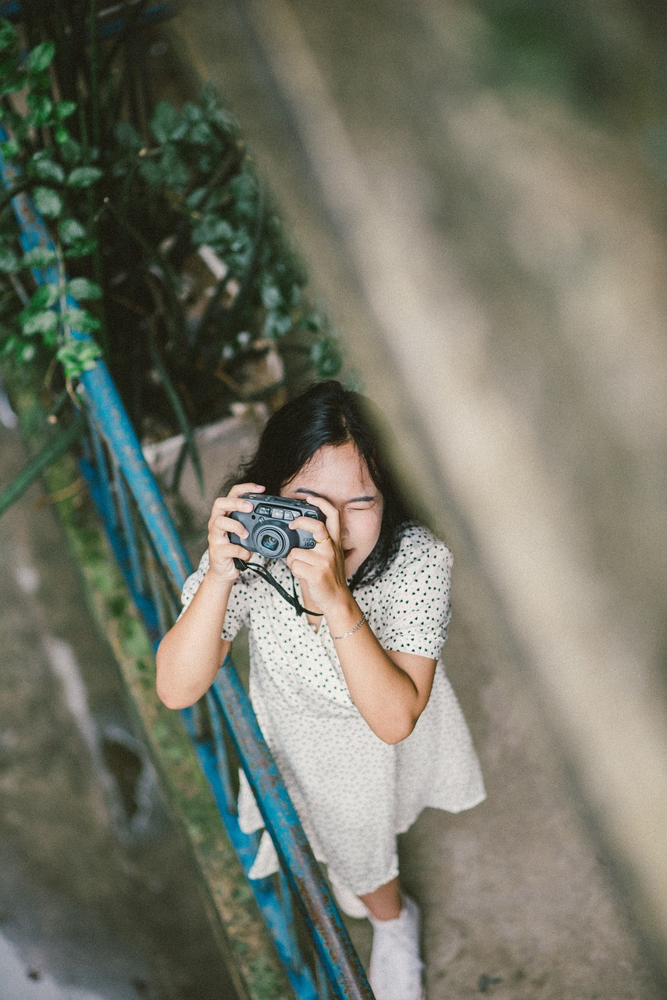
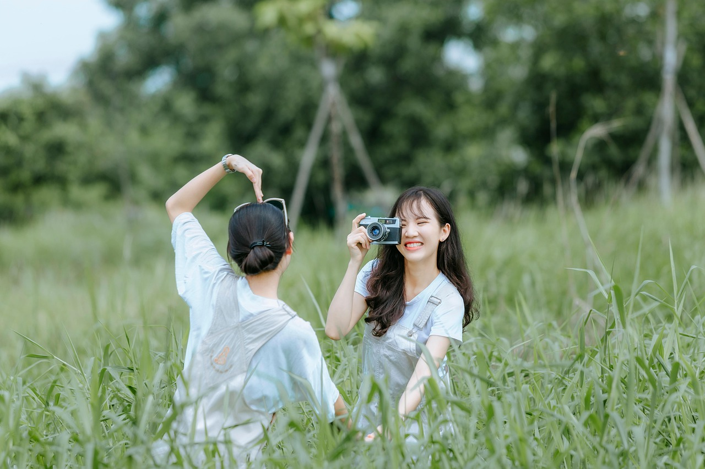

PHOTOGRAPHY AS A HOBBY
The most exciting thing about photography is all the super cool gear available to buy, but if you're just starting out, all you need is a camera body and a good lens. A good suggestion is to buy equipment that has been lightly used (and therefore cheaper) instead of brand new. Most lenses last several decades, and the ones that are sold used tend to be in great shape still. Buy from a reputable place, like B&H, to make sure you get a quality product.
One other tip is to not be swayed by fancy new features that tend to be useless for a majority of people. Nobody needs wi-fi enabled cameras (battery drain), huge megapixel counts (unless you're also upgrading your storage and editing hardware), super high ISOs (useless), and 4K video (unless you're also investing in a stabilization rig).
INVEST IN EDUCATION
Having a camera is the first step, but knowing how to actually use that camera is going to take some learning.
It's easy to get overwhelmed once the thrill of a new camera passes. It can be frustrating to see beautiful images online and not be able to achieve them. The truth is, all cameras are pretty much the same. The difference in the final image comes from knowledge of the person taking the picture. Figure out how you best learn new information: do you prefer self-paced video tutorials, in-person classes, or reading a book? And start learning! This is one of the best aspects of having photography as a hobby - you get to learn new things all the time, discover detailed information, and see results pretty much immediately when you try things out with your camera.
PRACTICE, PRACTICE, PRACTICE
There's a huge difference between knowing something in your head and putting that knowledge into practice. Photography relies on quick timing as you try to capture the exact moment you're seeing in front of your lens. If you're spending 30 seconds finding the setting you need, you're probably going to miss the shot.
ASK FRIENDS AND FAMILY
If you're interested in learning portrait photography (like me), ask your family and friends to model for you! It's more interesting to photograph new subjects and explore new locations, which will motivate you to stick with it even if the going gets tough (and it usually will). And when you're done photographing, make sure to print some of your images so that you can enjoy them outside of your computer screen!
The greatest gratification you can have when it comes to photography is the feeling that you were responsible for capturing that amazing photograph... don't let your camera take the credit. Learn your craft, dedicate yourself to your hobby, and create some beautiful art!
By Nataliya Lalor